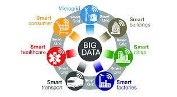

<!DOCTYPE html>
<html lang="en">
<head>
    <meta charset="UTF-8">
    <meta http-equiv="X-UA-Compatible" content="IE=edge">
    <meta name="viewport" content="width=device-width, initial-scale=1.0">
    <link rel="stylesheet" href="firstaistyle.css">
    <link rel="stylesheet" href="https://cdnjs.cloudflare.com/ajax/libs/font-awesome/6.3.0/css/all.min.css" 
    integrity="sha512-SzlrxWUlpfuzQ+pcUCosxcglQRNAq/DZjVsC0lE40xsADsfeQoEypE+enwcOiGjk/bSuGGKHEyjSoQ1zVisanQ==" crossorigin="anonymous" referrerpolicy="no-referrer" />
    <link rel="stylesheet" href=
"https://maxcdn.bootstrapcdn.com/bootstrap/4.0.0/css/bootstrap.min.css"
        integrity=
"sha384-Gn5384xqQ1aoWXA+058RXPxPg6fy4IWvTNh0E263XmFcJlSAwiGgFAW/dAiS6JXm"
        crossorigin="anonymous">
    <title>Web Journal</title>
</head>
<body>
    <div class="sidebar">
        <h3><b>DATA SCIENCE</b></h3>
        <ul>

          <li>
            <a href="ai.html">
            <span><b>Artificial Intelligence</b></span>
          </a>
        </li>
        <hr>
  
          <li>
            <a href="Iot.html">
            <span><b>IoT</b></span>
          </a>
        </li>
        <hr>
        <li>
          <a href="AR.html">
          <span><b>Augmented Reality</b></span>
        </a>
      </li>
      <hr>
   
    <li>
      <a href="other.html">
      <span><b>Other Emerging Tech</b></span>
    </a>
    </li>
    <hr>
          <li>
            <a href="index.html">
            <span><b>Home</b></span>
          </a>
        </li>
        <hr>
        <li>
          <a href="about.html">
          <span><b>About</b></span>
        </a>
      </li>
    
        
    </ul>
    
       </div>
       <div class="main">
        <h2> <B>What is Data Science</B></h2>
<p>Data science is a multi-disciplinary field that uses scientific methods, processes, algorithms, and 
  systems to extract knowledge and insights from structured, semi-structured and unstructured data.
  Data science is much more than simply analyzing data. It offers a range of roles and requires a 
  range of skills</p>

  <h2> <B>Data types from Data Analytics perspective</B></h2>

 <p><b>Structured Data</b></p>
<p>Structured data is data that adheres to a pre-defined data model and is therefore straightforward to 
  analyze. Structured data conforms to a tabular format with a relationship between the different 
  rows and columns. Common examples of structured data are Excel files or SQL databases. Each 
  of these has structured rows and columns that can be sorted</p>

  <p><b>Semi-structured Data</b></p>
  <p>Semi-structured data is a form of structured data that does not conform with the formal structure 
    of data models associated with relational databases or other forms of data tables, but nonetheless, 
    contains tags or other markers to separate semantic elements and enforce hierarchies of records 
    and fields within the data. Therefore, it is also known as a self-describing structure. Examples of 
    semi-structured data include JSON and XML are forms of semi-structured data</p>

    <p><b>Unstructured Data</b></p>
    <p>Unstructured data is information that either does not have a predefined data model or is not 
      organized in a pre-defined manner. Unstructured information is typically text-heavy but may 
      contain data such as dates, numbers, and facts as well. This results in irregularities and ambiguities 
      26
      that make it difficult to understand using traditional programs as compared to data stored in 
      structured databases. Common examples of unstructured data include audio, video files or NoSQL databases.</p>
  


<p><b>The Data Value Chain is introduced to describe the information flow within a big data system as 
  a series of steps needed to generate value and useful insights from data. The Big Data Value Chain 
  identifies the following key high-level activities:
  </b></p>
  <ul>
    <li><b>Data Acquisition</b>
      It is the process of gathering, filtering, and cleaning data before it is put in a data warehouse or any 
      other storage solution on which data analysis can be carried out. Data acquisition is one of the 
      major big data challenges in terms of infrastructure requirements.</li>
      <li><b>Data Analysis</b>
        It is concerned with making the raw data acquired amenable to use in decision-making as well as 
        domain-specific usage.</li>
        <li><b>Data Curation</b>
          It is the active management of data over its life cycle to ensure it meets the necessary data quality 
          requirements for its effective usage. Data curation processes can be categorized into different 
          activities such as content creation, selection, classification, transformation, validation, and 
          preservation</li>
          <li><b>Data Storage</b>
            It is the persistence and management of data in a scalable way that satisfies the needs of 
            applications that require fast access to the data. Relational Database Management Systems 
            (RDBMS) have been the main, and almost unique, a solution to the storage paradigm for nearly 
            40 years</li>
            <li>
              <b>Data Usage</b>
                It covers the data-driven business activities that need access to data, its analysis, and the tools 
                needed to integrate the data analysis within the business activity
            </li>
  </ul>

  
  <h2> <B>What is Big Data</B></h2>
  <p>Big data is the term for a collection of data sets so large and complex that it becomes difficult to 
    process using on-hand database management tools or traditional data processing applications. 
    </p>
    <p>In this context, a “large dataset” means a dataset too large to reasonably process or store with 
      traditional tooling or on a single computer. This means that the common scale of big datasets is 
      constantly shifting and may vary significantly from organization to organization. Big data is 
      characterized by 3V and more: 
      </p>
      <p>• <b>Volume</b>: large amounts of data Zeta bytes/Massive datasets</p>
      <p>• <b>Velocity</b>: Data is live streaming or in motion</p>
      <p>• <b>Variety</b>: data comes in many different forms from diverse sources</p>
      <p>• <b>Veracity</b>: can we trust the data? How accurate is it?</p>
    <div class="row_1">
                            
      <div class="column_1">
        
        <div class="card_1" style="width: 18rem;">
          
          
        </div>
      
      </div>
      <div class="column_1">
        
        <div class="card_1" style="width: 18rem;">
          
         
        </div>
      
      </div>
      <div class="column_1">
        
        <div class="card_1" style="width: 18rem;">
          
         
        </div>
      
      </div>


      </div>  


      <div class="container .con">
       
        <div class="row">
           
               <div class="col-lg-6 mb-4">
                <div class="card">
                  <iframe width="500" height="315" src="https://www.youtube.com/embed/i3zx3gF9AUU" title="YouTube video player" frameborder="0" allow="accelerometer; autoplay; clipboard-write; encrypted-media; gyroscope; picture-in-picture; web-share" allowfullscreen></iframe>
                    <div class="card-body">
                        <h6 class="card-title">Big Data Examples</h6>
                        
                       
                    </div>
                </div>
            </div>
            <div class="col-lg-6 mb-4">
                <div class="card">
                  <iframe width="500" height="315" src="https://www.youtube.com/embed/S4RL6prqtGQ" title="YouTube video player" frameborder="0" allow="accelerometer; autoplay; clipboard-write; encrypted-media; gyroscope; picture-in-picture; web-share" allowfullscreen></iframe>
                    <div class="card-body">
                        <h6 class="card-title">How Big Data Is Used In Amazon Recommendation Systems _ Big Data Application & Example </h6>
                        
                       
                    </div>
                </div>
            </div>
            </div>
            </div>


            
  <h2> <B>Hadoop</B></h2>
  <p>Hadoop is an open-source framework intended to make interaction with big data easier. It is a 
    framework that allows for the distributed processing of large datasets across clusters of computers 
    using simple programming models. It is inspired by a technical document published by Google. 
    </p>
  

    <div class="container .con">
       
      <div class="row">
         
             <div class="col-lg-6 mb-4">
              <div class="card">
                <iframe width="500" height="315" src="https://www.youtube.com/embed/aReuLtY0YMI" title="YouTube video player" frameborder="0" allow="accelerometer; autoplay; clipboard-write; encrypted-media; gyroscope; picture-in-picture; web-share" allowfullscreen></iframe>
                  <div class="card-body">
                      <h6 class="card-title">What Is Hadoop_ _ Introduction To Hadoop </h6>
                      
                     
                  </div>
              </div>
          </div>
         
          </div>
    </div>
    <p><b>Clustered Computing and Hadoop Ecosystem</b></p>  
    <h6><b>Clustered Computing</b><br>
      Because of the qualities of big data, individual computers are often inadequate for handling the 
      data at most stages. To better address the high storage and computational needs of big data, 
      computer clusters are a better fit.</h6>  
      <p>Big data clustering software combines the resources of many smaller machines, seeking to provide 
        a number of benefits:</p>
        <p><b>Resource Pooling</b>: Combining the available storage space to hold data is a clear benefit, 
          but CPU and memory pooling are also extremely important. Processing large datasets 
          requires large amounts of all three of these resources</p>
<p><b>High Availability</b>: Clusters can provide varying levels of fault tolerance and availability 
  guarantees to prevent hardware or software failures from affecting access to data and 
  processing. This becomes increasingly important as we continue to emphasize the 
  importance of real-time analytics</p>
  <p><b>Easy Scalability</b>: Clusters make it easy to scale horizontally by adding additional machines 
    to the group. This means the system can react to changes in resource requirements without 
    expanding the physical resources on a machine.
    </p>
 

</body>
</html>